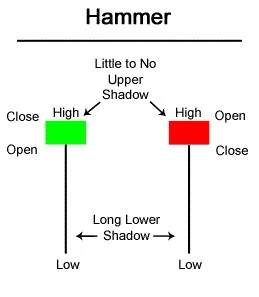
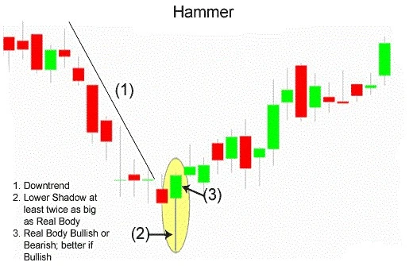
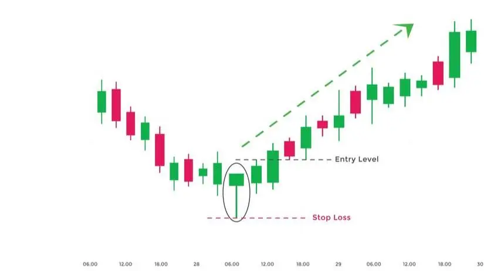

Traders in the financial markets often make use of candlesticks as a great visual aid to analyze and monitor what a particular price has done within a certain time period. Candlestick patterns are the most flexible technical indicators to understand market movements. The patterns can help traders gauge market sentiment for a certain financial asset. For instance, a hammer candlestick is a bullish pattern formed when the price of an asset declines from its opening price, reaching close to the support level, only to bounce back to close at a high.
Talking of bullish candlesticks, a popular pattern is the hammer candlestick formation. A hammer is one of the more important reversal patterns that traders should be aware of. The hammer is treated as a bullish reversal, but only when it appears under certain conditions. The pattern normally forms near the bottom of downtrends, indicating that the market is attempting to define a bottom.
| What is Hammer Candlestick? |
The hammer candlestick is found at the bottom of a downtrend and signals a potential (bullish) reversal in the market. A hammer is a candlestick pattern, when a stock opens then moves a lot lower during the day and then rallies back near the opening price. The candlestick pattern looks like a hammer with the long lower wick from the lows of the day looking like the handle and the opening and closing price body form what looks like the hammer’s head. The lower wick is usually twice the size of the candle body but can be even bigger. To get a clear idea about Hammer Candle and what it looks like please find the chart below...

A bullish Hammer candlestick is formed when the high and the close are the same and it is considered a stronger formation because the bulls were able to reject the bears completely plus the bulls were able to push the price even more before the opening price.
The long lower shadow of the Hammer indicates that the market tested to find where support and demand were located. When the market found the support area, the lows of the day, bulls began to push prices higher, near the opening price. Thus, the bearish advance downward was rejected by the bulls.

| Importance of Hammer Candlestick Chart |
| Limitations of Using Hammer Candlesticks |
There is no assurance the price will continue to move to the upside following the confirmation candle. A long-shadowed hammer and a strong confirmation candle may push the price quite high within two periods. This may not be an ideal spot to buy as the stop loss may be a great distance away from the entry point, exposing the trader to risk which doesn't justify the potential reward.
Hammers also don't provide a price target, so figuring out what the reward potential for a hammer trade is can be difficult. Exits need to be based on other types of candlesticks patterns or analyses.
